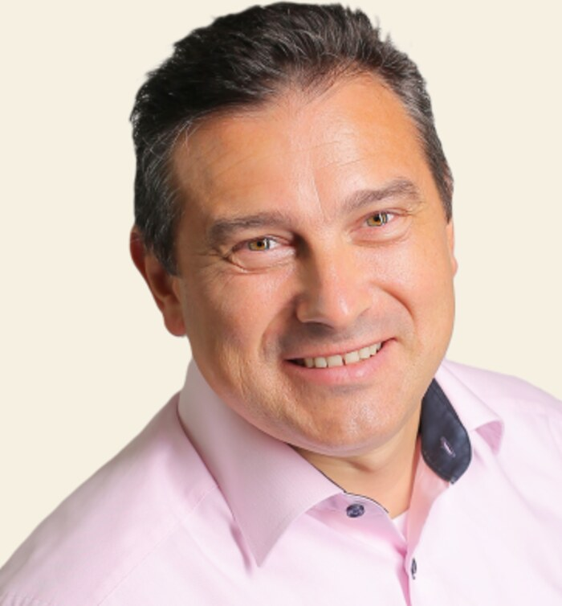
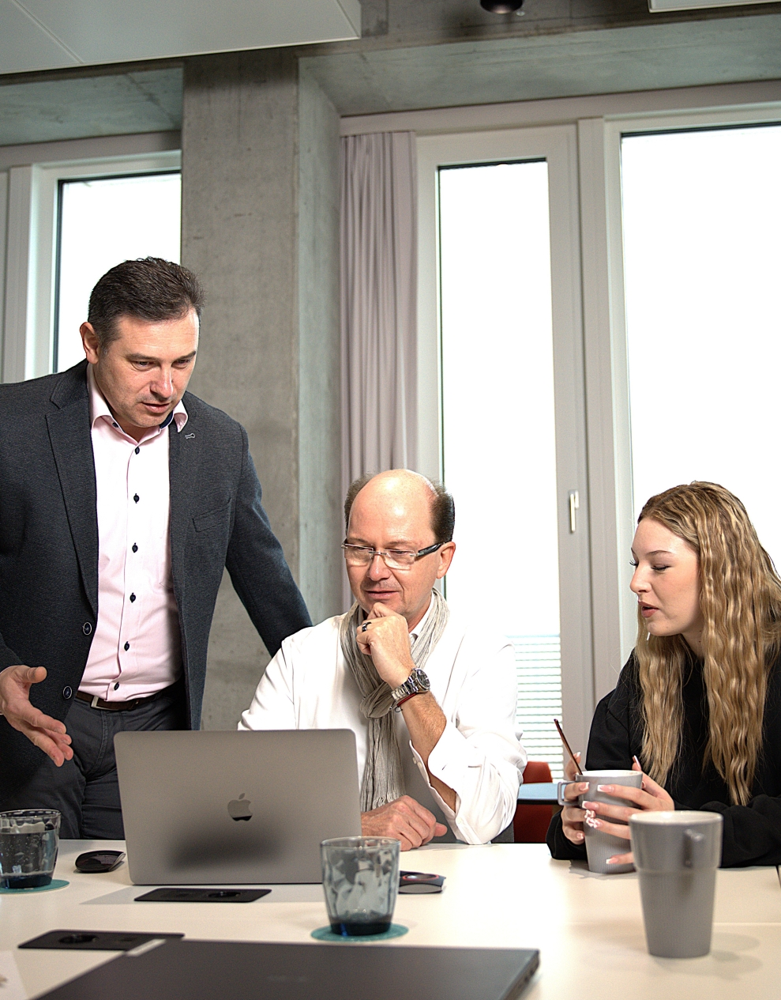
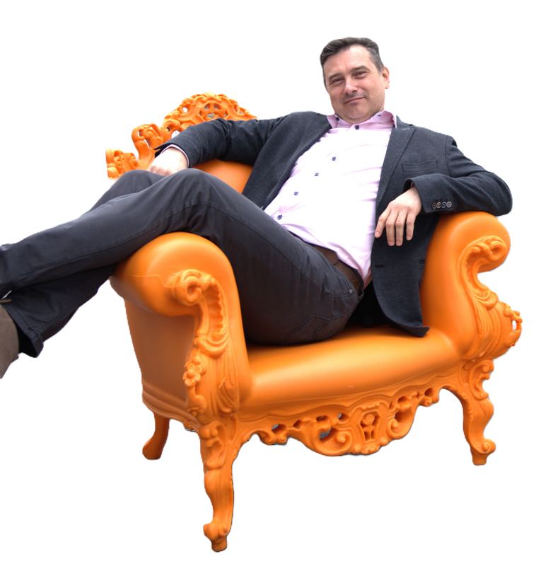
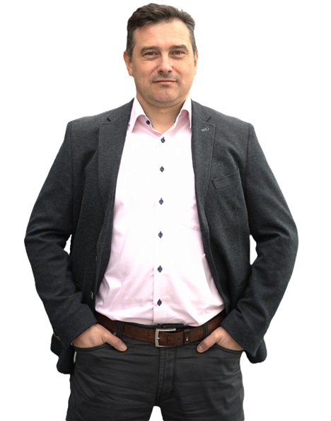

Vom Funktionieren zum bewussten Gestalten
Ich bin NLP-Trainer, Coach und Seminarleiter — aber vor allem jemand, der nicht nur über Veränderung spricht, sondern sie selbst durchlebt hat. Das hier ist die Geschichte dahinter: warum ich heute Frauen begleite, die nach außen funktionieren und innerlich wieder Klarheit suchen.

Eine einzige Übung an einem Seminartisch
Nach vielen Jahren in der Persönlichkeitsentwicklung habe ich eine Sache immer wieder gesehen: Menschen tragen viel mit sich herum und wissen nicht, wie sie sich anpassen oder ändern können. Ich kenne das aus eigener Erfahrung — ich hielt eine so schnelle, echte Veränderung damals für unmöglich, ohne einen "Mega-Experten" an meiner Seite.
Der Wendepunkt kam bei einem NLP-Practitioner-Seminar. Die erste Übung drehte sich um Wahrnehmungsfilter: kein Mensch sieht dasselbe Ereignis gleich, weil jeder eigene Filter aus Prägung mitbringt — durch Eltern, Umfeld, Erfahrungen. In diesem Moment habe ich verstanden, wie einfach eine echte Veränderung im Kopf beginnt — und dass mir das nie jemand beigebracht hatte.
Direkt danach war klar: Wie wir denken, ist ein enormer Hebel im eigenen Leben. Menschen kontrollieren selbst ihr Leben und können aktiv ihre Zukunft gestalten, statt nur das zu leben, was sie für möglich halten. Genau das musste ich weitergeben.
Wie wir denken, ist der größte Hebel, den wir haben — und niemand hat uns je gezeigt, wie man ihn bewusst nutzt.
Du bist nicht deinen Umständen ausgeliefert.
„Ich habe gelernt: Der Abstand zwischen dem, was man früh spürt, und dem, wonach man tatsächlich handelt, ist der teuerste Abstand im Leben."
Das habe ich nicht nur einmal erlebt — sondern mehrfach, auch schmerzhaft, in beruflichen und persönlichen Wendepunkten. Genau deshalb arbeite ich heute nicht mit Motivationssprüchen, sondern mit einem strukturierten Prozess: damit du nicht erst Jahre später erkennst, was du heute schon spürst.

Drei Werkzeuge, die mehr bewegen als tausend Ratschläge
Die meisten Ratschläge scheitern, weil sie am Verstand ansetzen — nicht an den Mustern, die längst automatisch laufen. Als NLP-Coach setze ich deshalb an drei Stellen an, die in einem normalen Gespräch praktisch nie zur Sprache kommen.
Du siehst eine Situation nicht, wie sie ist — du siehst sie durch einen Filter, der dir oft längst nicht mehr dient. Reframing verschiebt genau diesen Filter, bis aus einer Sackgasse plötzlich eine Option wird.
Wie sich ein Gedanke anfühlt, hängt nicht nur davon ab, was du denkst, sondern wie du es dir vorstellst — Bild, Ton, Nähe, Farbe. Kleine Verschiebungen hier verändern oft mehr als stundenlanges Reden.
Zustände wie Ruhe oder Klarheit lassen sich gezielt abrufbar machen — wie ein Knopf, den du drückst, wenn du ihn brauchst, statt zu hoffen, dass er zufällig da ist.
Klingt nach Technik? Ist es auch. Aber sie wirkt oft in Minuten, wo reines Nachdenken seit Jahren nicht weiterkam.
Ich kann bis heute nicht erklären, woher ich das wusste.
„Manche Momente lassen sich nicht planen. Man muss nur bereit sein, sie zu erkennen."
Bei einem zehntägigen NLP-Practitioner-Seminar spürte ich schon ab dem zweiten Tag: Am vorletzten Tag würde ich eine bestimmte Teilnehmerin zu ihrem Thema coachen. Ich habe es anderen vorher gesagt — sie haben es bezweifelt.
Die Teilnehmerin hatte ihr Thema zuvor bei anderen Coaches versucht zu lösen. Am Ende wählte sie mich, als es bei ihr nicht mehr anders ging. Was folgte, war eine sehr intensive, emotionale Coaching-Situation — mit einem starken emotionalen Ausbruch. Ich wusste in diesem Moment, wann und wie ich sie ansprechen musste, ohne die Situation eskalieren zu lassen. Nach 20 bis 30 Minuten kippte die Stimmung in gemeinsames, befreiendes Lachen. Am Ende war sie ruhig — und sehr glücklich.
Woher diese Intuition für das exakte Timing kam, kann ich bis heute nicht erklären. Aber genau das ist für mich Mentoring: nicht nur Methode, sondern auch ein Gespür dafür, wann jemand bereit ist für den nächsten Schritt — und wann nicht.

Struktur ist kein Widerspruch zu echter Veränderung
Bevor ich Coach wurde, war ich Gesellschafter einer Firma — und habe erlebt, was passiert, wenn Entscheidungen zu spät getroffen werden, weil offene Kommunikation fehlt. Ich wusste ein Jahr im Voraus, dass ein Konflikt kommen würde, und habe trotzdem gewartet, bis er mich buchstäblich vor die Tür gesetzt hat. Diese Lektion hat mich geprägt.
Beruflich arbeite ich seitdem auch im Bereich Microsoft Dynamics — mit Prozessen, Strukturen, klaren Abläufen. Diese Denkweise bringe ich in mein Coaching ein: kein vages Bauchgefühl-Programm, sondern ein nachvollziehbarer Bauplan mit klaren Schritten. Wer mit mir arbeitet, bekommt nicht nur emotionale Klarheit, sondern auch eine Struktur, an der er sich festhalten kann, wenn es unbequem wird.
Was meine Begleitung ausmacht
Ich arbeite an der Ursache, nicht am Symptom
Nicht das lauteste Symptom lösen, sondern verstehen, wo der eigentliche Druckpunkt sitzt — mit NLP, Coaching und ehrlichem Hinsehen.
Struktur statt nur Inspiration
Ein individueller Bauplan statt Standardprogramm — Veränderung wird konkret, nachvollziehbar und umsetzbar.
Ehrlich statt bequem
Ich beschönige nichts. Manchmal ist die unbequeme Frage der wichtigste Schritt — aber immer mit Respekt, nie von oben herab.
Kein Standardprogramm von der Stange
Jede Situation ist anders. Deshalb passe ich den Prozess an dich an, statt dich in ein starres Konzept zu pressen.
Du bist die Architektin deines Lebens
Ich löse nicht für dich. Ich gebe dir die Werkzeuge und den Spiegel, damit du dein Leben selbst gestaltest.
Gemeinsam mit Adriana
Bei Workshops und Seminaren wie „Stress-frei & mentale Stärke" arbeite ich eng mit meiner Kollegin Adriana zusammen — zwei Perspektiven auf demselben Weg.

Das ist nicht nur die Geschichte der Menschen, die ich begleite. Es ist auch meine eigene.
Es gab einen Punkt in meinem Leben, an dem ich gespürt habe: So wie es ist, kann es nicht bleiben. Äußerlich funktionierte vieles. Innerlich fehlten Klarheit, Richtung und echte Erfüllung. Durch intensive Weiterbildung, praktische Erfahrung und tiefe innere Arbeit habe ich mich zum NLP-Trainer, Coach und Seminarleiter entwickelt — mit dem Fokus, den ich mir selbst gewünscht hätte: Selbstführung, Stressmanagement und mentale Stärke für Frauen 35–55, die nach außen funktionieren und innerlich wieder zu sich finden wollen.
- NLP-Trainer & Coach
- Seminarleiter
- Stressmanagement & Mentale Stärke
- Individuelle Lebensplanung
„Ich bin nicht die Heldin deiner Geschichte. Du bist es. Ich zeige dir, wie du selbst dein Leben entwirfst."
Wenn dich das anspricht, lass uns sprechen.
Kein Verkaufsdruck, kein Standardprogramm. Im kostenlosen Erstgespräch schauen wir gemeinsam ehrlich auf deine Situation.